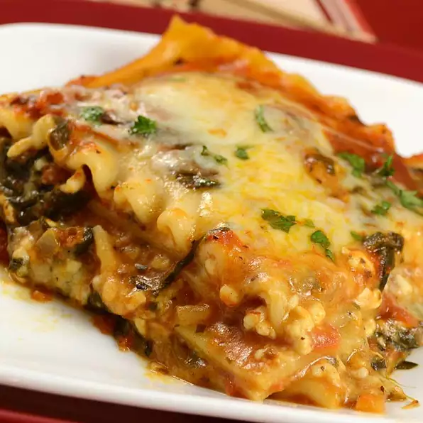

Simple Spinach Lasagna

Description
You can also substitute ground turkey or another veggie for the spinach.
Ingredients
- 10 ounce frozen chopped spinach
- 1/2 chopped onion
- 1/2 teaspoon dried oregano
- 1/2 teaspoon dried basil
- 2 cloves crushed garlic
- 1 tablespoon extra virgin olive oil
- 32 ounce spaghetti sauce
- 1 1/2 cups water
- 2 cups non-fat cottage cheese
- 1/4 cup grated Parmesan cheese
- 1/2 cup chopped fresh parsley
- 1 teaspoon salt
- 1/8 teaspoon black pepper
- 1 egg
- 8 ounce lasagna noodles
Steps
- Preheat oven to 350 degrees F.
- In a large pot over medium heat saute spinach, onion, oregano, basil and garlic in the olive oil. Pour in spaghetti sauce and water; simmer 20 minutes. In a large bowl mix cottage cheese, mozzarella cheese, Parmesan cheese, parsley, salt, pepper and egg.
- Place a small amount of sauce in the bottom of a lasagna pan. Place 4 uncooked noodles on top of sauce and top with layer of sauce. Add 4 more noodles and layer with 1/2 sauce and 1/2 cheese mixture, noodles and repeat until all is layered, finishing with sauce.
- Cover with foil and bake in a preheated oven for 55 minutes. Remove foil and bake another 15 minutes. Let sit 10 minutes before serving.